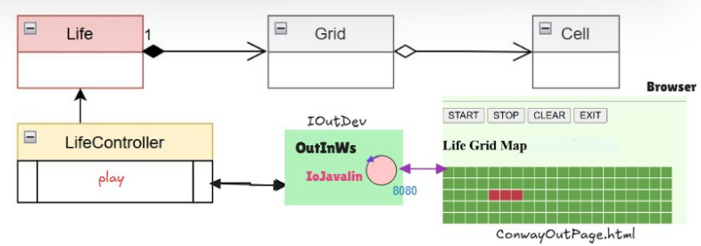

Introduction
Goal: Procediamo ad una evoluzione del sistema
GAME OF LIFE DI CONWAY
con i requisiti spiegati in seguito.
Requirements
Il committente fissa in aggiunta i seguenti requisiti:
- R1 Dotare il gioco Life di Conway di una pagina HTML come dispositivo I/O.
Il gioco consiste nell’introdurre una Griglia di Celle il cui stato (cella ‘viva’ o cella ‘morta’)
evolve come stabilito dallle regole di ConwayLife
- R2 La pagina deve costituire un componente esterno alla applicazione secondo la architettura riportata in IoJavalin
esterno alla applicazione
- R3 Il gestore del gioco sarà l’utente che ha aperto per primo (owner) una pagina HTML collegata al gioco. In altre
parole, solo la pagina dell’owner avrà pulsanti di comando START/STOP/CLEAN/EXIT attivi
- R4 La pagina HTML deve essere aggiornata in modo automatico man mano il gioco procede
- R5 Un utente non owner che si collega mentre il gioco è in corso, dovrebbe vedere lo stato attuale della griglia in
modo corretto
- R6 In maniera opzionale la pagina HTML deve indicare se il gioco continua anche nel caso di griglia vuota o di configurazione tabile
- R7 Il deployment del gioco deve avvenire mediante Docker.
Requirement analysis
Il dominio dell'applicazione è stato definito precedentemente nello Sprint1
Problem analysis
Analizzo l'architettura del sistema che voglio realizzare riportata di seguente

Oltre alle classi già realizzate, viene aggiunto il componente OutInWs che dovrà implementare l'interfaccia di IOutDev (già definita), incapsulando il server IoJavalin, per la comunicazione con la pagina html ConwayInOutPage visualizzata via browser.
Questa classe ha la funzione di fare da mediatore tra il LifeController, che ha il ruolo di gestire l'evoluzione del gioco, e il browser, che invece offre una rappresentazione grafica del gioco.
L'interazione tra OutInWs e la pagina web avviene tramite scambio di messaggi che seguano un protocollo definito in maniera tale da permettere la loro corretta interpretazione.
I messaggi scambiati seguono la struttura dettata da
IAppMessage
Test plans
Project
Testing
Deployment
Il deployment avviene tramite piattaforma Docker, grazie ai seguenti file: Dockerfile e conway26GuiHtml.yaml
Maintenance
 GIT repo: https://github.com/merilaaouaj/IngegneriaSistemiSoftware
GIT repo: https://github.com/merilaaouaj/IngegneriaSistemiSoftware